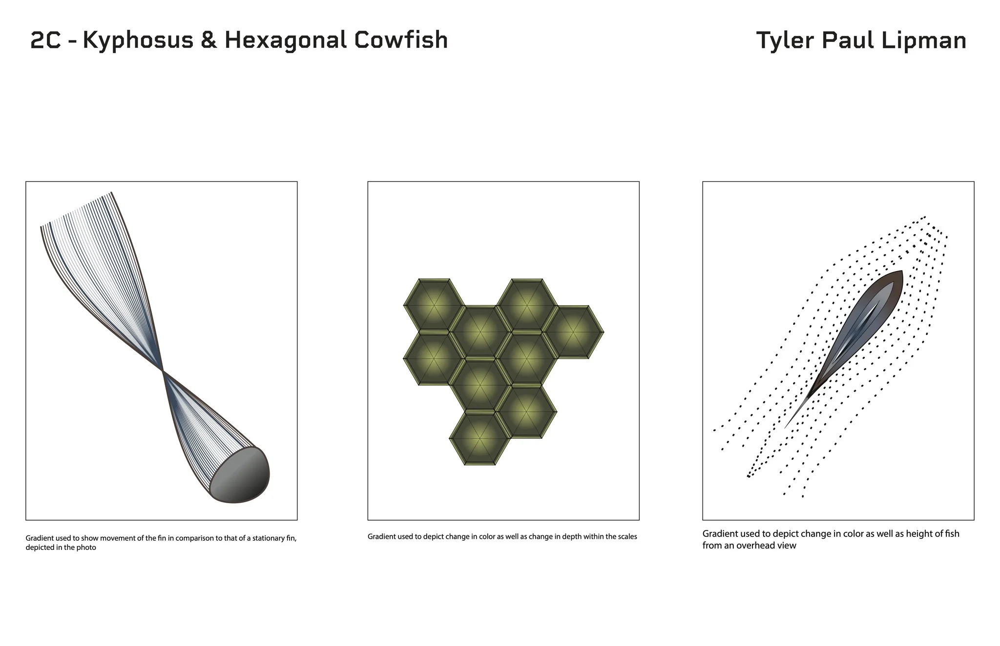
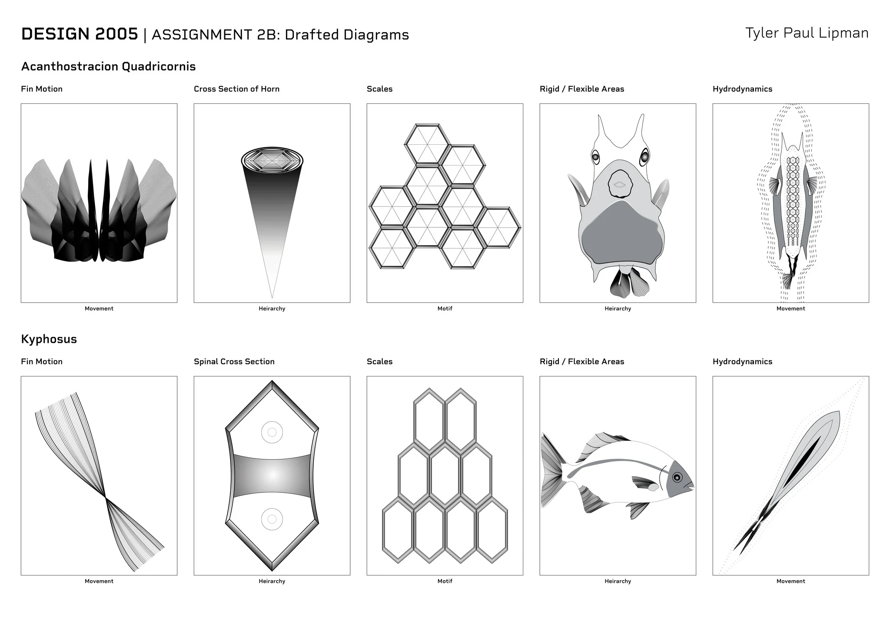
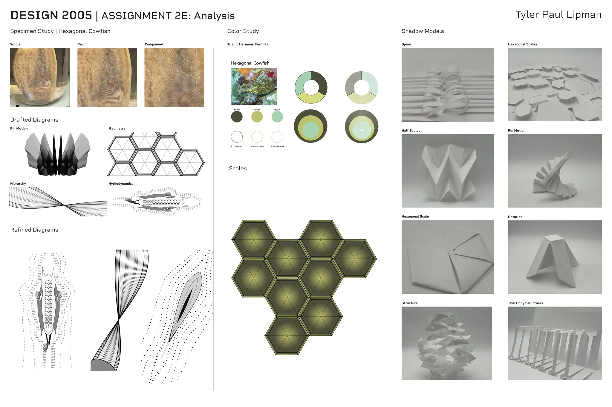
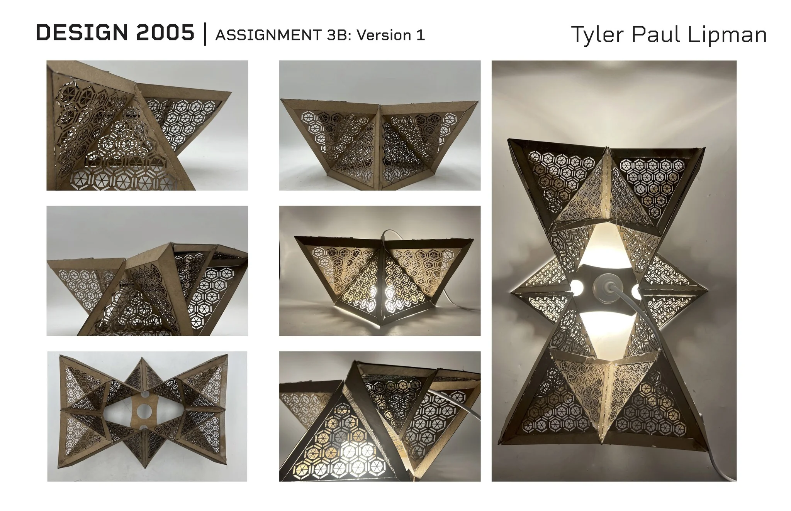
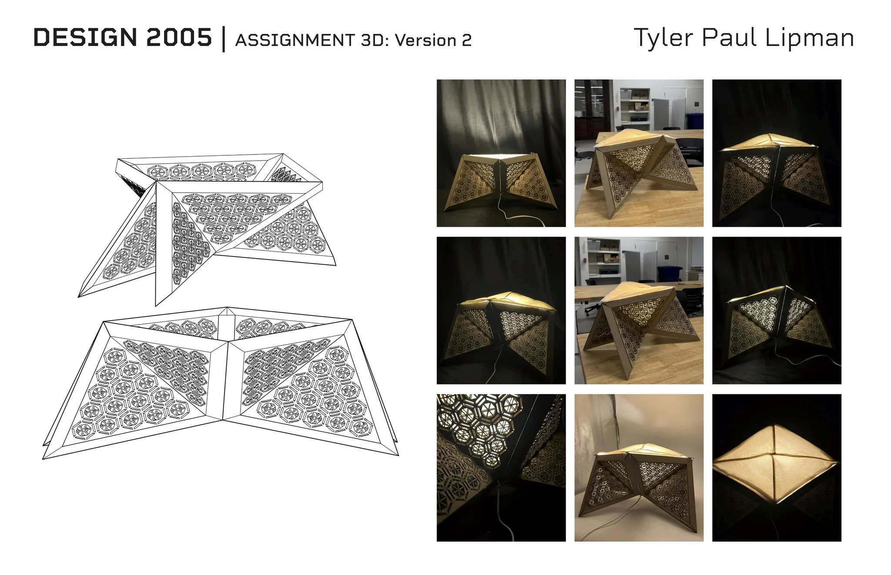
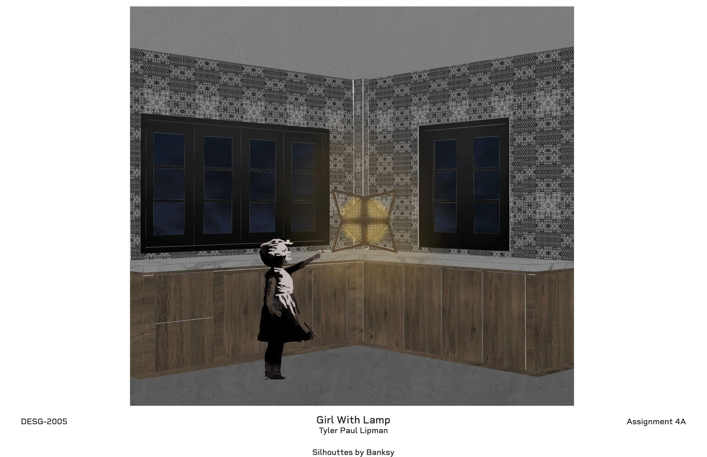

Ostra
A lighting object shaped by the geometry of the hexagonal cowfish.
- Year
- 2025
- Duration
- 4 months
- Context
- Design Studio I
- Tools
- Rhino 3D · Adobe Suite

From natural system
to constructed form.
Ostra translates the geometric organization of the hexagonal cowfish’s exoskeleton into a layered lighting object. Its form grows from a study of repetition, tessellation, and the interaction between light and surface.
Developed in Design Studio I, the project moved through composition, biological analysis, translation, and synthesis. Natural systems became a starting point for an engineered form.
Finding a
geometric language.
Initial studies extracted patterns from biological references and developed them into two-dimensional compositions. Repetition, structural layering, and controlled variation became the basis for digital and physical models.






Layer. Offset.
Illuminate.
The lamp is composed of two layered surfaces built from folded triangular modules. A slight offset creates depth and changes how light passes through the construction. Iterative modeling and material testing informed this surface system.




Pattern activated
by light.
When illuminated, the layered geometry produces shifting patterns, while wood grain adds variation across the surface. Ostra brings structure, material, and light into a single object.


